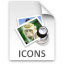

ICO と ICNS ディスクアイコンの変換について
|  |
アイコン間の差異を簡単に解決します
バージョン 1.4
Apache License 2.0 に基づいてリリース
|
プログラムの概要
▲
現在、このアプリケーションは PNG 画像間の切り替え機能（このツールは ICO に含まれる Microsoft のビットマップと、ICNS に含まれる Apple の圧縮形式の両方の機能に備わっています）で構成されています。
 |
|
画像を右クリックすると、次のボックスが表示されます。
コピー - 選択した画像がコピーされます。
貼り付け - コピーされた画像が追加されます。
削除 - 選択した画像が消えます。
更新 - ファイル全体が再読み込みされます。
閉じる - ファイル全体が消えます。
設定ダイアログボックス
▲
著作権表示
▲
Copyright © 2024-2025 Rui Baptista
Apache License バージョン 2.0 に基づきライセンス供与されます。
Apache License 2.0 に基づいてリリースされたライセンスのコピーを入手できます。本ライセンスに基づいて配布されるソフトウェアは、「現状有姿」で配布され、明示的または黙示的を問わず、いかなる種類の保証または条件も付与されません。
本製品には、
Apache Commons CLI ソフトウェア（Copyright 2002-2024 The Apache Software Foundation）が含まれています。